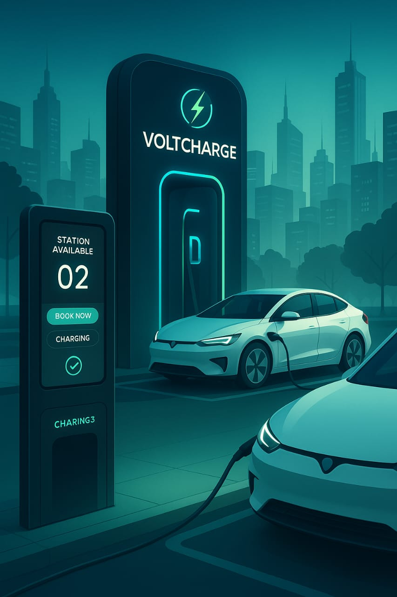

Profile
Motivated and skilled B.Tech student at VIT-AP University with a strong foundation in software development, data structures, and algorithms. Proficient in Java, C, C++, Python, SQL, and full-stack web development using the MERN stack. Experienced in building real-world applications, including a paper-sharing platform for students. Currently completing a full-stack MERN internship and consistently working to enhance skills in web development, AI/ML, and problem-solving. Seeking opportunities in product-based companies to contribute innovative solutions and grow as a full-stack developer.
Back to homepageProjects
VoltCharge
VoltCharge – EV Charging Network Platform Tech Stack: HTML, CSS, JavaScript (UI Prototype), Business Tools (Canva, PowerPoint) Designed a smart EV charging platform concept to help users locate, book, and access charging stations across cities. Collaborated with a team to develop the core business model, value proposition, and marketing strategy. Created wireframes, UI mockups, and a demo video to present the MVP and gain user feedback. Focused on sustainability, accessibility, and scalability for real-world impact.
LinkWork Experience
Full Stack Web Development Intern – MERN Stack
Remote Internship | Feb 2025 – Present As a Full Stack Web Development Intern, I am actively working with the MERN (MongoDB, Express.js, React.js, Node.js) stack to build dynamic, full-featured web applications. I have developed key skills in both frontend and backend development, working on real-world tasks such as building responsive UIs, managing state with React, and handling REST APIs using Express.js. During the internship, I focused on mastering HTML, CSS, JavaScript, and React for the frontend. I built multiple components, optimized for user experience, and followed industry-standard practices for clean code and responsive design. On the backend, I worked with Node.js and Express to build RESTful APIs, connect with databases, and handle CRUD operations. Though the stack includes MongoDB, I also explored MySQL for relational database handling in personal projects. I collaborated with mentors and fellow developers through weekly code reviews and team stand-ups, which helped improve my understanding of Git, version control, and team communication in a remote setup. This experience taught me how to work efficiently in an agile development environment and strengthened my problem-solving and debugging abilities.
Project Lead – VoltCharge (Entrepreneurship Project)
VIT-AP University | Jan 2025 – Mar 2025 VoltCharge is a conceptual EV charging network designed to make electric vehicle charging more accessible and efficient. As the team lead, I was responsible for designing the platform’s core business model, user experience, and technical architecture. I conducted market research, competitor analysis, and created user personas to understand customer needs. I collaborated with my team to design the initial UI prototypes using HTML, CSS, and presentation tools. We developed a pitch deck and demo video as part of our entrepreneurship coursework, and presented it to mentors for feedback. This project gave me real experience in building an MVP, defining value propositions, and planning for future scalability. It also enhanced my presentation, leadership, and collaborative skills.
Education
VIT-AP - Amaravati
Computer Science and Engineering(B.tech), 2023-2027
I am currently a second-year B.Tech student at VIT-AP University, Andhra Pradesh, where I have pursued a diverse set of courses including Computer Organization and Architecture, Applied Statistics, Artificial Intelligence, Machine Learning, Software Engineering, and Entrepreneurship. I have worked on academic projects such as an online exam registration system and am currently undertaking a full-stack MERN internship, during which I have completed HTML and am learning CSS. I am also developing a unique website that allows VIT-AP students to freely access previous exam papers, and I plan to master Data Structures and Algorithms during my upcoming vacation. Additionally, I am working on a startup venture called VoltCharge, an EV charging network, reflecting my interest in both technology and entrepreneurship.
Sri Chaitanya Junior College - Kurnool
Intermediate (M.P.C), 2021-2023
I completed my intermediate education in the MPC stream (Mathematics, Physics, and Chemistry) at Sri Chaitanya Junior College, Kurnool. During this time, I built a strong academic foundation in core subjects and developed disciplined study habits that have supported my success in engineering. My time at Sri Chaitanya played a crucial role in shaping my analytical thinking and problem-solving skills, which continue to benefit me in my current technical and project-based work.
Crescent E.M High School - Kodumur
I completed my schooling at Crescent EM High School in Kodumur, where I developed a strong academic base and essential life skills. My school years laid the groundwork for my interest in science and technology, and helped shape my discipline, curiosity, and commitment to learning. The supportive environment at Crescent EM High School played a key role in building my confidence and preparing me for higher education.